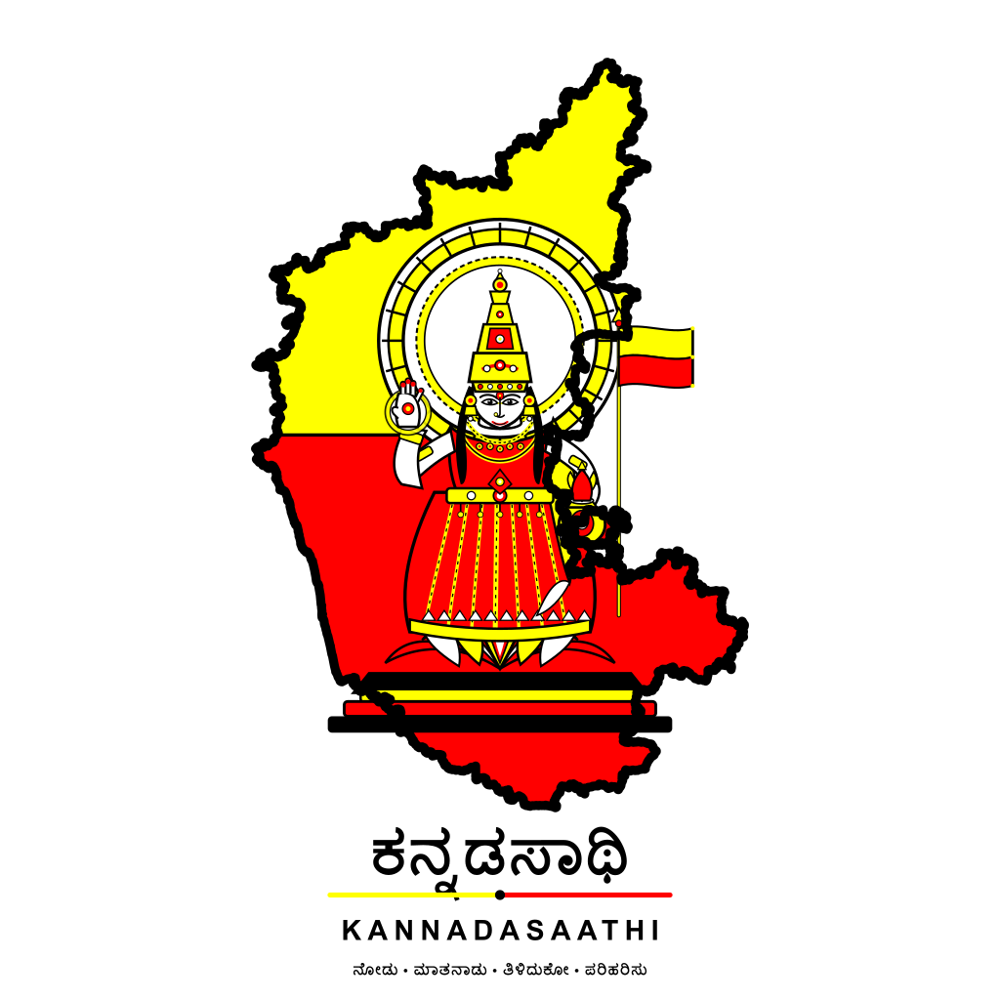

ಕನ್ನಡಸಾಥಿ (KannadaSaathi) — Pitch DeckUser snaps a circular, speaks a voice question in Kannada, or searches a scheme.
Multer validates files (5MB). Open-Meteo fetches weather. Gemini or Curated DB reasons.
Presents results in fluent Kannada, strictly separating verified facts from explanations.
1-click transfer to 'ಪರಿಹರಿಸು', generating action plans, checklist tasks, and reminders.
User checks off tasks, tracks visual progress %, and receives scheduled deadline chimes.
Click sample 'ಕಾಲೇಜು ಪರೀಕ್ಷಾ ಸುತ್ತೋಲೆ'. Shows instant 5-part breakdown with ₹1,850 fee and Nov 28 deadline. Click 'ಕ್ರಿಯಾ ಯೋಜನೆ ರಚಿಸಿ'.
Select prompt 'ರೈತರಿಗೆ ಕೃಷಿ ಇಲಾಖೆಯ ಸಬ್ಸಿಡಿ ವಿವರ ತಿಳಿಸಿ'. Inspect editable transcript and play natural Kannada spoken audio via 'ಆಲಿಸಿ'.
Select 'ಮೈಸೂರು' for live Open-Meteo weather. Click 'ಗೃಹ ಜ್ಯೋತಿ 200 ಯೂನಿಟ್' to showcase verified facts separated from explanation with source link.
Generate bilingual SSP scholarship plan. Toggle 'English'. Convert to checklist; check off tasks to see live progress bar and chime.